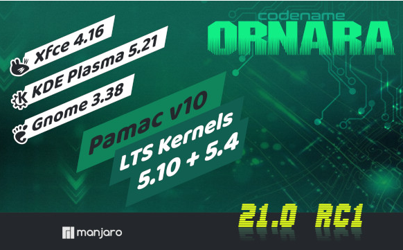

Fedora 34 Beta
New Features:
. GNOME 4.0
. KDE Plasma 5.21
. LXQt 0.16
. Xfce 4.16
. i3 tiling window manager
For more details click here!|  |
Manjaro 21 RC1
. New Features:
. GNOME 3.38
. KDE Plasma 5.21
. Xfce 4.16
. Kernel 5.10 LTS is now availble.
. Best guess langauge support for the calameres installer
For more details click here!Arch Linux
New Features:
. Guided installer
. GNOME 4.0
. KDE Plasma 5.21.4
. i3 Window manager 4.19.2
Ubuntu 20.10
New Features:
. GNOME 3.38
. Fingerprint Login support
. Latest version of Open source software
. OEM Kernel support
. Ubiquity, now comes with Active Directory (AD) integration
For more details click here!